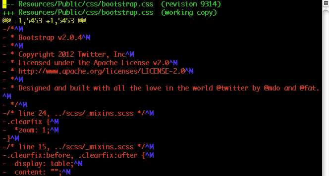
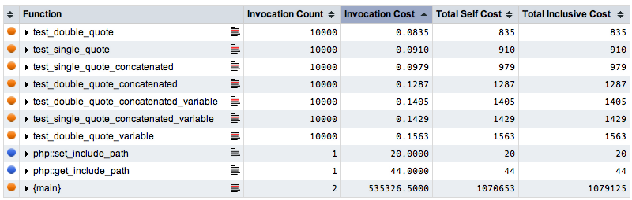

Michael Cannon
TYPO3 Vagabond
US, South Korea, Taiwan, India, Germany
The basics are just that, basic. As we grow with experience, we tend to forget them because they aren't cool anymore.
empty vs. issetempty vs. countcount in for loopsecho vs. print
$array = array( 0, 1, 1, 2, 3, 5 );
$string = '';
foreach ( $array as $key => $value ) {
$string .= $key . ' ' . $value . ', ';
}
echo $string;
$a = 1 vs. $a++$a = 1; if (1 = $a) // "Parse error: syntax error, unexpected '='' vs. if ($a = 1) // true; assigns $a and is possible logic error if (1 == $a) // true vs. if ($a == 1) // true
$a = 1; // a is an integer by context ($a = 1) // true; also assigning $a; possible logic error ($a == 1) // true ($a == '1') // true ($a === 1) // true ($a === '1') // false; '1' is a string, not integer like $a

Reality is… they're all really fast, a blink of the eye
function test_double_quote() {
return " hello ";
}
function test_single_quote() {
return ' hello ';
}
function test_single_quote_concatenated() {
return ' hello ' . ' world ';
}
function test_double_quote_concatenated() {
return " hello " . " world ";
}
function test_double_quote_concatenated_variable() {
$world = "world";
return " hello " . $world;
}
function test_single_quote_concatenated_variable() {
$world = 'world';
return ' hello ' . $world;
}
function test_double_quote_variable() {
$world = "world";
return " hello $world";
}
Double-quote vs. single-quote test functions
// ick, not bad, but not optimal
$string = "Me {$rhyme} $not {$so['good']}";
// good
$string = 'I like a bay ';
$string .= "On a sunny day ";
$string .= 'Watching a ' . $blue . ' jay ' . "Sitting on a " . $sun['ray'];
$fav_saying = sprintf( 'I %s %s', $love, $mentoring['developers'] );
sprintf or printf instead$array = array( 'three' => 'TYPO3' ); echo $array[ 'three' ]; // outputs TYPO3 echo $array[ three ]; // outputs TYPO3… // and gives PHP Notice: Use of undefined constant
empty vs. isset
if ( ! empty( $arr[ 1 ] ) ) { … }
vs.
if ( isset( $arr[ 1 ] ) && count( $arr[ 1 ] ) ) { … }
if ( isset( $arr[ 1 ] ) && '' != $arr[ 1 ] ) { … }
if ( isset( $arr[ 1 ] ) && 0 < $arr[ 1 ] ) { … }
empty vs. isset for checking if item exists
empty returns FALSE if var has a non-empty and non-zero value, else TRUEisset returns TRUE if var exists and has value other than NULL, else FALSEempty vs. count
$arr = array();
if ( empty( $arr ) ) { … }
vs.
if ( 0 == count( $arr ) ) { … }
empty vs. count for checking empty arrays
empty works with strings, integers, floats, NULL, boolean, arrays, and variablescount in for loops
$array = array(1, 2, 3, 4);
// slow because of count on each iteration
for ( $i = 0; $i < count($array); $i++ ) { echo $i; }
// instead, do this
$count = count($array);
for ( $i = 0; $i < $count; $i++ ) { echo $i; }
// or this
for ( $i = 0, $count = count($array); $i < $count; $i++ ) { echo $i; }
count before for loopsecho vs. print
echo 'hello'; print 'hello'; echo( 'hello' ); print( 'hello' ); echo 'foo is ' . $foo; print 'foo is ' . $foo;
echo and print are language contructsecho
echo returns NULLprint returns 1 – Useful for file writing
echo 'hello';
if ( FALSE ) {
echo ' cold,';
echo ' cruel';
… // long convoluted stuff
}
echo ' world';
echo 'hello';
// echo ' cold,';
// echo ' cruel';
// … // long convoluted stuff
echo ' world';
if control structure to comment out code chunks
Understanding PHP's fundamentals helps you make better choices
<?php // open php and do stuff ?> close php HTMLgoeshere <?php // more php… ?>
<?php?><?php & ?> is ignored by PHP; or ?>// This is a one-line c++ style comment /* This is a multi line comment yet another line of comment */ # This is a one-line shell-style comment
Danger
/** echo 'This is a test'; /* This comment will cause a problem */ */
$var = 'Bob'; $Var = 'Joe'; echo $var . ', ' . $Var; // outputs 'Bob, Joe' $var_2 = &$var; $var_2 .= ' Jones'; echo $var; // outputs 'Bob Jones' echo $var_2; // outputs 'Bob Jones'
$[_a-zA-Z][_a-zA-Z0-9]+& – assign by reference AKA point to this
$a = 1; // global scope
include 'b.php';
// b.php contents
<?php
function test() {
echo $a; // references local scope variable, but doesn't exist
// PHP Notice: Undefined variable
}
test(); // no output
function testb() {
global $a;
echo $a; // reference to global scope variable
}
testb(); // outputs 1
?>
"42" // is a string 42 // is an integer 42 + "28 days" // is an integer, because of string math true // is a boolean "true" // is a string
PHP does not support type definition… type is determined by context…
$bool = TRUE; $bool = false;
$int = 123; // decimal number $int = -123; // negative decimal number $int = 0123; // octal number (83 decimal), 0 precede $int = 0x1A; // hexadecimal number (26 decimal), 0x precede $int = 0b101; // hexadecimal number (5 decimal), 0b precede
+ or negative -$float = 1.234; $float = -1.2e3; $float = 7E-10;
+ or negative -
echo 'this is a simple string'; // outputs this is a simple string
echo '$x'; // outputs $x
echo "$x"; // outputs value of x
$str = <<<EOD
Example of "string"
spanning {$multiple} lines
using 'heredoc' syntax.
EOD;
echo "\n"; // outputs newline whitespace character
echo "\"\$x\""; // outputs "$x"
echo "$x"; // outputs value of x
echo "$x[1]"; // outputs value of x[1]
echo "{$x['date']}"; // outputs value of x['date']
echo "{$obj->month[12]->name}"; // outputs December
echo "{\$x['date']}"; // outputs {$x['date']}
echo "{$x["date"]}"; // outputs PHP Notice: Undefined variable
"<<<EOD & EOD;
echo ''; // outputs empty string
echo '\n'; // outputs \n
echo '\'\$x\''; // outputs '\$x'
echo '$x'; // outputs $x
echo '{$x[1]}'; // outputs {$x[1]}
echo '''; // outputs PHP Parse error: syntax error, unexpected T_CONSTANT_ENCAPSED_STRING
' (simplest)<<<'EOD' & EOD;$array = array( 10, 20, 30 ); $array = array( 'I', 'am', 'TYPO3', ); $array = [ 'are', 'you?' ]; // as of PHP 5.4
[] vs. array()$array = array( 'foo' => 'bar', 'bar' => 'foo', ); $array = array( $key1 => $value1, $key2 => $value2 ); $array = [ 10 => 'foo', 20 => 'bar' ]; // as of PHP 5.4
$array = array( 'fruits' => array ( 'a' => 'apple', 'b' => 'banana', ), 'numbers' => array ( 1, 2, 3, 4, 5, 6 ), 'holes' => array ( 'first', 5 => 'second', 'third' ), ); echo $array['fruits']['a']; // outputs apple echo $array['numbers'][2]; // outputs 3 echo $array['holes'][5]; // outputs second unset( $array['holes'][0] ); // removes value 'first' $array['apple']['green'] = 'good'; // new multi-dimensional array
class foo {
function do_foo() { echo 'Doing foo…'; }
}
$bar = new foo;
$bar->do_foo();
$file = fopen( 'data.txt', 'r' ); $db = mysql_connect( 'localhost', 'mysql_user', 'mysql_password' );
$var = NULL;
There's nothing here
define( 'FOO', 'something, ' ); define( '_FOO_2_BAR', 'something different, ' ); const FOO_BAR = 3.1415967; // PHP 5.3.0 echo FOO . _FOO_2_BAR . FOO_BAR; // outputs something, something different, 3.1415967
$[_A-Z][_A-Z0-9]+// debug helpers: where are you in script execution? echo __LINE__ . ':' . basename( __FILE__ ) . '<br />'; t3lib_div::devLog( true, __FUNCTION__, 0, false );
| Name | Description |
|---|---|
__LINE__ |
The current line number of the file. |
__FILE__ |
The full path and filename of the file. |
__DIR__ |
The directory of the file. Like dirname(__FILE__). |
__FUNCTION__ |
The function name. |
__CLASS__ |
The class or trait (PHP 5.4) name. |
__TRAIT__ |
The trait name and namespace. (PHP 5.4.0) |
__METHOD__ |
The class method name. |
__NAMESPACE__ |
The name of the current namespace (case-sensitive) (PHP 5.3.0). |
$a = 1; -$a $a == $b
| Example | Name | Result |
|---|---|---|
-$a |
Negation | Opposite of $a |
$a + $b |
Addition | Sum of $a and $b |
$a – $b |
Subtraction | Difference of $a and $b |
$a * $b |
Multiplication | Product of $a and $b |
$a / $b |
Division | Quotient of $a and $b |
$a % $b |
Modulus | Remainder of $a divided by $b |
| Example | Gets… | Result |
|---|---|---|
$a = 1 |
Set to | 1 |
$a *= -1 |
Negated | Opposite of $a |
$a += $b |
Added to | Sum of $a and $b |
$a -= $b |
Subtracted from | Difference of $a and $b |
$a *= $b |
Multiplied by | Product of $a and $b |
$a /= $b |
Divided by | Quotient of $a and $b |
$a %= $b |
Mod'd by | Remainder of $a divided by $b |
| Example | Name | Result |
|---|---|---|
$a == $b |
Equal (Equality) | TRUE if $a is equal to $b after type juggling |
$a === $b |
Identical (Identity) |
TRUE if $a is equal to $b and of same type |
$a != $b |
Not equal | TRUE if $a is not equal to $b after type juggling |
$a <> $b |
Not equal | TRUE if $a is not equal to $b after type juggling |
$a !== $b |
Not identical |
TRUE if $a is not equal to $b or not of same type |
$a < $b |
Less than | TRUE if $a is strictly less than $b |
$a > $b |
Greater than | TRUE if $a is strictly greater than $b |
$a <= $b |
Less than or equal to | TRUE if $a is less than or equal to $b |
$a >= $b |
Greater than or equal to | TRUE if $a is greater than or equal to $b |
| Example | Name | Effect |
|---|---|---|
++$a |
Pre-increment | Increments $a by one, then returns $a |
$a++ |
Post-increment | Returns $a, then increments $a by one |
--$a |
Pre-decrement | Decrements $a by one, then returns $a |
$a-- |
Post-decrement | Returns $a, then decrements $a by one |
| Example | Name | Result |
|---|---|---|
! $a |
Not | TRUE if $a is not TRUE |
$a && $b |
And | TRUE if both $a and $b are TRUE |
$a || $b |
Or | TRUE if either $a or $b is TRUE |
$a and $b |
And | TRUE if both $a and $b are TRUE |
$a xor $b |
Xor | TRUE if either $a or $b is TRUE, but not both |
$a or $b |
Or | TRUE if either $a or $b is TRUE |
| Example | Name | Result |
|---|---|---|
$a . $b |
Concatenation | $a$b |
$a .= ' ' . $b |
Concatenating assignment | $a $b |
| Example | Name | Result |
|---|---|---|
$a + $b |
Union | Union of $a and $b |
$a == $b |
Equality | TRUE if $a and $b have the same key/value pairs |
$a === $b |
Identity | TRUE if $a and $b have the same key/value pairs in the same
order and of the same types |
$a != $b |
Inequality | TRUE if $a is not equal to $b |
$a <> $b |
Inequality | TRUE if $a is not equal to $b |
$a !== $b |
Non-identity | TRUE if $a is not identical to $b |
$a = array('a' => 'apple', 'b' => 'banana');
$b = array('a' => 'pear', 'b' => 'strawberry', 'c' => 'cherry');
$c = $a + $b; // Union of $a and $b
var_dump($c);
array(3) {
['a']=> string(5) 'apple' // from left
['b']=> string(6) 'banana' // from left
['c']=> string(6) 'cherry' // from right
}
$a = array('apple', 'banana');
$b = array(1 => 'banana', '0' => 'apple');
var_dump($a == $b); // bool(true), has equality
var_dump($a === $b); // bool(false), doesn't have identity
if, elseif, else if, elseswitchwhile, do-whileforforeachbreak, continuerequire, include, require_once, include_onceif, elseif, else if, else
if ( expression ) {
…
} elseif ( expression ) {
…
} else {
…
}
if, elseif, else if
else
if & elseif evaluate to FALSEswitch
switch ($i) {
case 0:
echo 'i equals 0';
break;
case 1:
case 2:
echo 'i equals ' . $i;
break;
default:
echo 'i is not equal to 0, 1 or 2';
break;
}
case – condition to match
break – stop case execution
default – default condition when no others match
if(1=$a), elseif(2=$a), elseif(3=$a)…while
$i = 1;
while ($i <= 10) {
// the printed value would be $i before the increment
echo $i++;
}
do-while
$i = 0;
do {
echo $i;
} while ( $i > 0 );
for
for (expr1; expr2; expr3) { statement }
for ($i = 1; $i <= 10; $i++) { echo $i; }
foreach
foreach (array_expression as $value) { statement }
foreach (array_expression as $key => $value) { statement }
reset( array_expression ) before usingunset( $key, $value ) when donebreak
$i = 0;
while (++$i) {
switch ($i) {
case 5:
break 1; // Exit switch and continue with while
case 10:
break 2; // Exit switch and while
default:
…
}
}
break n – how many nested levels to break out ofbreak 1 is same as breakbreak 0 is invalidcontinue
$i = 0;
while ($i++ < 5) {
echo 'Outer';
while (1) {
echo 'Middle';
while (1) {
echo 'Inner';
continue 3; // skips all remaining while loop operations
}
echo 'This never gets outputted';
}
echo 'This never gets outputted';
}
continue n – how many nested levels to continue out ofcontinue 1 is same as continueswitch can userequire, include, require_once, include_once
include 'vars.php';
include_once 'db.php';
require('http://www.example.com/file.php?foo=1');
require_once 'http://www.example.com/file.txt?bar=2'; // doesn't work, not PHP
return in given file to terminate processing earlyrequire_once or include_once to prevent PHP Fatal error: Cannot redeclarerequire, require_once – gives PHP Fatal error: Failed opening requiredinclude, include_once – gives PHP Warning: failed to open stream
function makecoffee( $types = array('cappuccino'), $coffeeMaker = NULL ) {
$device = is_null($coffeeMaker) ? 'hands' : $coffeeMaker;
return 'Making a cup of '.join(', ', $types).' with $device.\n';
}
echo makecoffee();
echo makecoffee( array('americano') );
echo makecoffee( array('cappuccino', 'lavazza'), 'teapot' );
$func = 'makecoffee';
$str = $func( array('machiato') );
echo $str;
$GLOBALS — References all global scope variables$_SERVER — Server and execution environment information$_GET — HTTP GET variables$_POST — HTTP POST variables$_FILES — HTTP File Upload variables$_COOKIE — HTTP Cookies$_SESSION — Session variables$_REQUEST — HTTP Request (GET, POST & COOKIE) variables$_ENV — Environment variables$HTTP_SERVER_VARS$HTTP_GET_VARS$HTTP_POST_VARS$HTTP_POST_FILES$HTTP_SESSION_VARS$HTTP_ENV_VARS$HTTP_COOKIE_VARS$php_errormsg — Previous error message
$HTTP_RAW_POST_DATA — Raw POST data
$http_response_header — HTTP response headers
$argc — The number of arguments passed to script$argv — Array of arguments passed to scriptAsk, speak up, mumble aloud
coding consistency is critical to long-term code survival and keeping your hair
Michael Cannon
TYPO3 Vagabond
michael.cannon@in2code.de